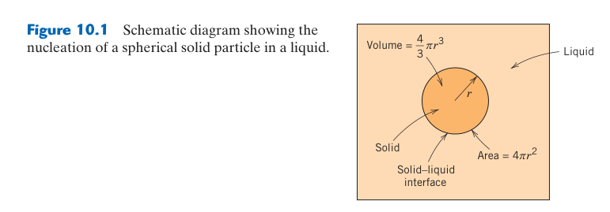
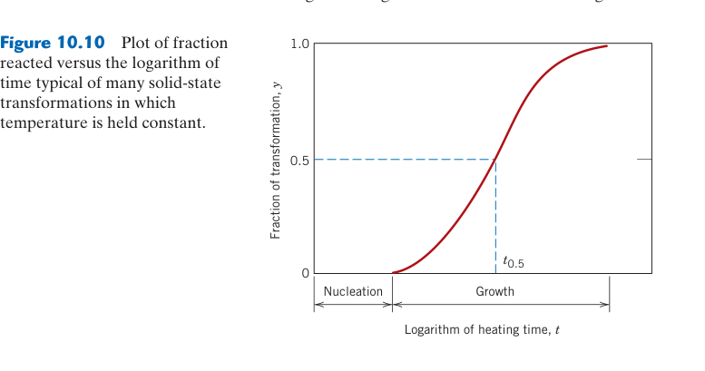
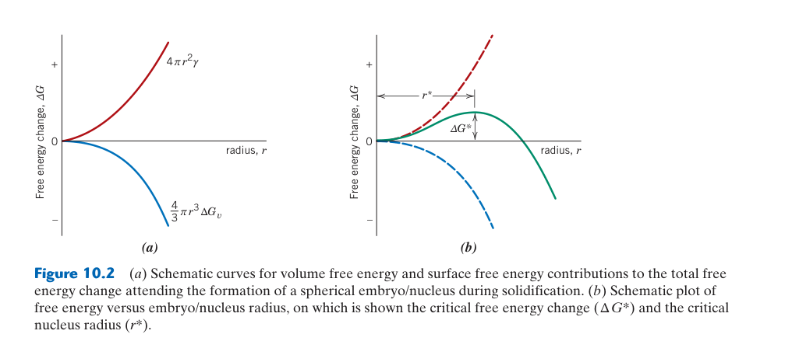
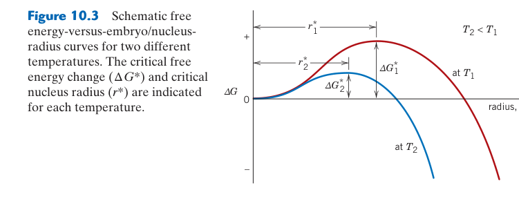
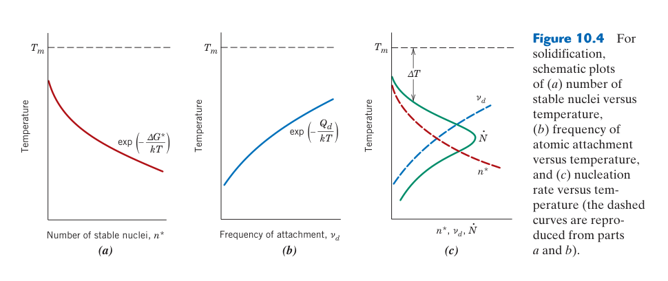
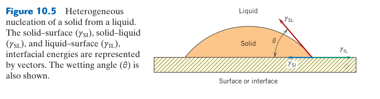
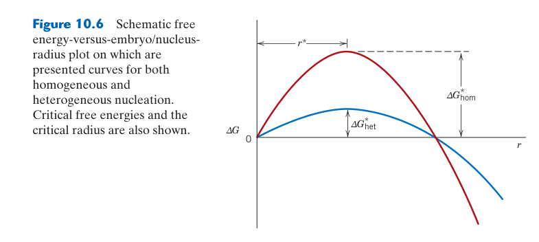
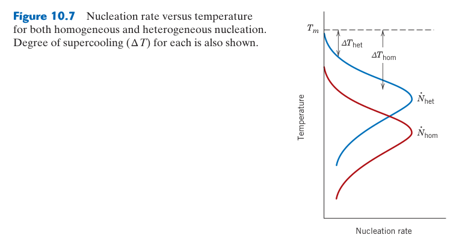
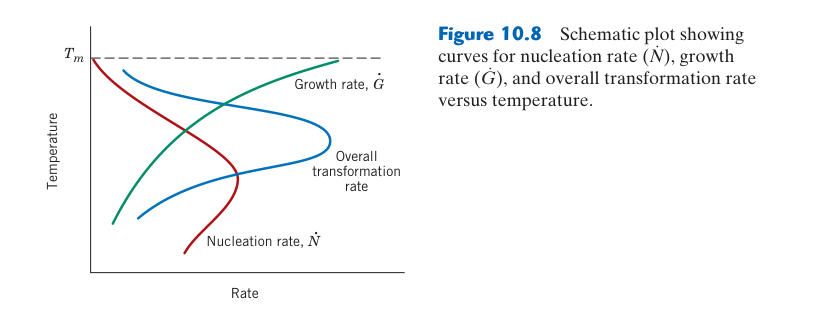
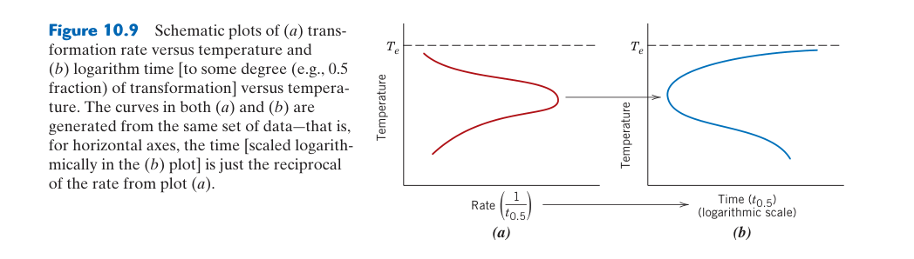

相變化：微觀結構與力學性質
📌 核心問題
為什麼同樣一塊鋼，慢慢冷卻變成軟的波來鐵，快速冷卻（淬火）卻變成極硬但脆的麻田散鐵？為什麼再加熱（回火）可以讓硬脆的麻田散鐵變得又強又韌？答案不在相圖（相圖只告訴你平衡狀態），而在相變化動力學——TTT 圖和 CCT 圖揭示時間如何決定最終的微觀結構。
🔑 關鍵概念
- 成核與成長：異質成核主導固態相變；Avrami：$y=1-\exp(-kt^n)$
- TTT 圖的 C 曲線：驅動力（低溫大）與擴散（低溫慢）的競爭
- 波來鐵：$\gamma\rightarrow\alpha+\text{Fe}_3\text{C}$，擴散控制，層狀間距取決於溫度
- 變韌鐵：介於波來鐵和麻田散鐵——針狀，部分剪切+部分擴散
- 麻田散鐵：無擴散剪切轉變，BCT，過飽和碳——極硬但脆
- 回火：加熱麻田散鐵→碳化物析出→韌性恢復，四階段
- CCT 圖：連續冷卻，比 TTT 更貼近實際熱處理
- 淬透性：Jominy 試驗。合金元素（Ni,Cr,Mo）將 C 曲線右移
🧭 本章推理地圖
- 相圖指出平衡相（Ch9）→ 自由能差提供相變化的熱力學驅動力（§10.1），但不保證立即轉變。
- 生成新相須付出界面能（§10.2）→ 先形成超過臨界尺寸的晶核（§10.2）→ 晶核才能成長（§10.3）。
- 降低溫度增大驅動力（§10.1–§10.2），卻減慢擴散（§10.3）→ 競爭形成 TTT 的 C 曲線（§10.5）。
- 冷卻路徑與曲線相交（§10.5、§10.9）→ 決定波來鐵（§10.6）、變韌鐵（§10.7）或麻田散鐵（§10.8）的比例與尺度。
- 微觀組織控制力學性質（§10.6–§10.8）→ 用 TTT／CCT 圖設計熱處理路徑（§10.5、§10.9及工程決策）。
先備知識橋接
- Ch9：Fe–Fe₃C 相圖——特別是要熟練地找到共析成分（0.76% C）、A₁/A₃/Acm 溫度、和槓桿定律計算初析相比例
- Ch9：Gibbs 相律——$F=C-P+1$，本章的非平衡轉變（麻田散鐵）不在相圖上，$F$ 不適用
- Ch5：擴散——波來鐵和變韌鐵的形成依賴碳擴散；擴散係數的 Arrhenius 行為解釋了 TTT 圖的 C 曲線形狀
- Ch5：$x \propto \sqrt{Dt}$——波來鐵層間距也受擴散控制，層間距 $\lambda \propto 1/\Delta T$


10.1 相變化的熱力學驅動力
自由能曲線如何決定平衡與亞穩
在固定溫壓下，系統傾向總 Gibbs 自由能較低的狀態；兩相自由能相等的位置給平衡轉變溫度。若母相已不是最低自由能，仍可能因成核能障而暫時存在，稱為亞穩狀態。過冷液體、過飽和固溶體與室溫保留沃斯田鐵都屬此類。熱力學只回答「是否有利」與最大可用驅動力，實際路徑還由界面遷移、擴散距離和可用成核位置決定。
判讀提醒：自由能差的符號取決於「新相減母相」的定義；推導前先固定符號，才能避免把驅動力與能障方向寫反。
驅動力與速度不是同一件事：低溫通常增加新舊相的自由能差，使轉變更有利，卻同時降低原子擴散率。高溫時擴散快但驅動力小，低溫時驅動力大但遷移慢，因此擴散型相變常在中間溫度具有最快總轉變速率。
實際相變還需克服界面能、彈性應變能與成分重新分配造成的障礙。平衡溫度只表示兩相自由能相等；冷卻到其下不代表立刻轉變，通常需一定過冷度與等待時間才能形成可穩定成長的新相。
為什麼相變化需要過冷（undercooling）？在平衡相變溫度 $T_e$（如共析溫度 727°C），新相（α + Fe₃C）和母相（γ）的 Gibbs 自由能相等——$\Delta G = 0$，沒有驅動力。必須冷卻到 $T_e$ 以下 → $\Delta G_v < 0$（新相自由能低於母相）→ 驅動力出現。過冷度 $\Delta T = T_e - T$ 愈大 → $\Delta G_v$ 愈大 → 驅動力愈強。
但驅動力只是必要條件——還需要動力學上可行（原子能擴散到位）。這就是為什麼 TTT 圖呈 C 形：高溫（小過冷度）→ 驅動力小、擴散快 → 轉變慢（驅動力是瓶頸）；中溫（中等過冷度）→ 驅動力大 + 擴散尚可 → 轉變最快（C 曲線鼻部）；低溫（大過冷度）→ 驅動力極大、但擴散極慢 → 轉變又變慢（擴散是瓶頸）。

10.2 成核——新相的第一步
臨界半徑與過冷度
球形核的自由能可寫成表面項 $4\pi r^2\gamma$ 加體積項 $(4/3)\pi r^3\Delta G_v$；轉變有利時 $\Delta G_v<0$。令導數為零得到 $r^*=-2\gamma/\Delta G_v$，能障 $\Delta G^*\propto\gamma^3/\Delta G_v^2$。過冷增加 $|\Delta G_v|$，使臨界核更小、能障下降，但溫度太低又會讓原子附著與成分分配變慢，因此成核率通常不會隨過冷無限增加。
異質成核的幾何降低因子介於 0 與 1，與接觸角相關；基底若能被新相良好潤濕，所需新增界面較少。孕育處理正是刻意加入高效基底，以增加核數並細化最終晶粒。
臨界核來自體積利得與表面代價的競爭：形成小顆粒會降低體積自由能，卻需建立高能界面。半徑小於 $r^*$ 的胚胎傾向消失，大於 $r^*$ 才能持續成長。過冷增加體積驅動力，使臨界半徑與成核能障下降。
均質成核假設核在完整母相內形成，通常需要很大過冷；異質成核利用晶界、差排、夾雜或容器壁降低新增界面面積，因此工程材料大多由異質成核主導。接觸角越小、基底潤濕越好，降低能障的效果越明顯。
相變化的第一步是成核（nucleation）——新相的微小區域（核，nucleus）在母相中形成。成核分為兩類：(1) 均質成核（homogeneous nucleation）——在完全均勻的母相內部隨機發生。需要極大的過冷度（對金屬可達數百°C），在實際固態相變化中幾乎從不發生。(2) 異質成核（heterogeneous nucleation）——在預存在的缺陷處（晶界、相界、差排、夾雜物表面）優先發生。因為缺陷提供了「免費的界面」→ 降低成核能障 → 成核更易。固態相變化幾乎總是異質成核。
核必須達到臨界尺寸 $r^*$ 才能穩定成長——小於 $r^*$ 的核（embryo，胚）會自發溶解，因為其體積自由能降低不足以補償界面能的增加。$r^* = 2\gamma/\Delta G_v$：過冷度愈大（$\Delta G_v$ 愈大）→ $r^*$ 愈小 → 成核愈易。

10.3 成長——核的長大過程
界面形貌反映穩定性
平坦界面若前方熱量或溶質來不及移走，微小凸起可能得到更大驅動力而繼續突出，形成胞狀或樹枝狀成長。固態轉變中，界面共格性與彈性應變也會選擇板條、針狀或等軸形貌。成長最快方向不一定是擴散最快方向，還可能由最低界面能或最小晶格錯配控制；因此形貌是熱力學、輸送與晶體學共同結果。
隨成長進行，溶質在界面前方堆積會降低局部驅動力並使速度下降。若擴散場彼此重疊，顆粒即使尚未接觸也會先競爭可用溶質；簡單的固定成長速度模型便會失效。
成長分析因此必須註明控制步驟與時間範圍。
成長可能由界面反應或長程擴散控制：若新相與母相成分不同，溶質必須離開或抵達界面，濃度梯度與擴散距離便限制速率；若成分近似相同，界面原子重新排列可能主導。顆粒相互接觸後會發生 impingement，可轉變體積逐漸減少，總速率因而下降。
界面移動速度與成核率共同決定最終尺度：成核多而成長時間短得到細組織；成核少而成長充分得到粗組織。這也是熱處理可在相分率近似相同時，仍藉冷卻路徑顯著改變強度與韌性的原因。
一旦核達到臨界尺寸，它會自發成長——因為進一步增大只會降低總自由能。成長速率受兩個因素競爭：(1) 驅動力（$\Delta G_v$，隨過冷度增大）——促進成長；(2) 擴散速率（$D$，隨溫度降低而指數下降）——限制成長。兩個因素的競爭產生了 C 曲線的形狀：高溫擴散快但驅動力小，低溫驅動力大但擴散慢，中等溫度二者平衡 → 轉變最快。
成長過程中，新相界面的結構決定了成長機制。共格界面（coherent，兩相晶格連續過渡）→ 成長由界面控制（interface-controlled）；非共格界面（incoherent）→ 成長由擴散控制（diffusion-controlled）。波來鐵的成長是擴散控制的——碳原子必須從形成肥粒鐵的區域擴散離開，而雪明碳鐵的形成需要碳原子的聚集。

10.4 Avrami 方程式——相變化動力學的數學框架
從延伸體積到實際分率
若假想每個新相顆粒可不受阻礙地持續長大，可計算「延伸體積」；真實顆粒相遇後不能重複占據同一位置，Avrami 的指數形式正是對 impingement 的統計修正。參數 $k$ 強烈依賴溫度，包含成核與成長速率；$n$ 可能因瞬間或連續成核、一維至三維成長而改變。若 Avrami 圖出現兩段斜率，通常暗示機制、形貌或成核方式在轉變途中改變，而不是強行用單一直線平均。
使用分率資料時還要扣除儀器基線並定義 0% 與 100% 轉變。DSC 放熱峰積分、膨脹量或硬度都可能作替代量，但只有在量測信號與相分率近似成比例時，才能直接套入方程。
若存在孵育時間，可用 $t-t_0$ 取代 $t$，但 $t_0$ 必須有物理與實驗依據。直接忽略早期資料雖能提高線性，卻可能掩蓋前驅析出、非等溫到達或儀器延遲。模型擬合應同時報告適用分率範圍和殘差，不能只給漂亮的 $R^2$。
此外，$k$ 的單位隨 $n$ 改變，跨溫度比較前應先確認參數定義一致。若轉變分兩階段，應分別建立模型，不能以單組平均參數預測完整熱處理。
非等溫製程則需採增量疊加或專用動力學模型驗證。
指數 $n$ 是綜合動力學參數：$X=1-\exp(-kt^n)$ 把成核方式、成長維度及碰撞效應濃縮在 $n$ 中，不能簡單把它當作固定材料常數。以 $\ln[-\ln(1-X)]$ 對 $\ln t$ 作圖，斜率可估 $n$、截距可估 $k$，但資料須避開極早期與接近完成時的高誤差區。
Avrami 模型通常適用於等溫、隨機成核且成長規律近似固定的轉變。若溫度連續變化、成核位置飽和、顆粒形貌改變或同時有多個反應，單一 $n$ 與 $k$ 只能作有效擬合，未必具有唯一微觀意義。
等溫相變化的轉變分率 $y$ 隨時間呈 S 形曲線——初期慢（成核階段）、中期快（核成長+新核持續形成）、末期慢（相鄰成長區碰撞 impingement，成長空間耗盡）。Avrami 方程式捕獲了這個行為：$y = 1 - \exp(-kt^n)$。$k$ 取決於溫度和成核/成長速率；$n$（Avrami 指數）反映幾何特徵：$n \approx 1$（一維成長）、$n \approx 2$（二維成長）、$n \approx 3$（三維成長，成核速率恆定）、$n \approx 4$（三維成長+成核速率隨時間增加）。
在 TTT 圖的構建中，取 $y=0.01$（轉變開始，1%）和 $y=0.99$（轉變完成，99%）的時間，在每個溫度下繪製，就得到了 C 曲線的開始線和完成線。這就是 TTT 圖的實驗構建方法。
📝 自編概念例：從 Avrami 參數推斷相變化機制
問題：某鋼在 600°C 等溫相變化的 Avrami 擬合給出 $n=3.2$, $k=2.5\times10^{-4}$。求轉變 50% 的時間，並推斷成核和成長模式。
解：$y=0.5$ → $kt^n = \ln 2 = 0.693$ → $t = (0.693/k)^{1/n} = 11.8$ 秒。$n \approx 3$ → 三維成長（球狀）+ 成核速率恆定。在 600°C，波來鐵團從晶界成核，向晶粒內部三維生長——與 $n \approx 3$ 吻合。

10.5 TTT 圖——等溫轉變圖的閱讀與使用
完整讀圖順序
先確認鋼種、沃斯田鐵化溫度與晶粒狀態，再沿實際時間–溫度路徑判斷何時穿越起始線、50% 線與完成線。等溫保持若只完成一部分，應先求已生成組織，剩餘沃斯田鐵再依後續路徑轉變；各產物分率總和必須為 100%。垂直快速降溫只是理想近似，厚件中心可能在降溫途中已穿過鼻尖，不能由表面冷速代替。
TTT 圖上的硬度通常是對應特定等溫產物或最終混合組織的實驗值。若路徑跨越多個區域，不能任選最近一個硬度標記；應先求各組織分率，再以量測或混合模型估算。
圖的時間軸通常是對數尺度，讀值時需特別避免把一格誤認為固定秒數。
TTT 路徑包含快速降溫、等溫保持與再冷卻：讀圖時只把等溫停留時間計入該溫度的轉變，不應沿斜線把不同溫度的時間直接相加。起始線與完成線分別代表指定轉變分率；穿過鼻尖前若已發生波來鐵或變韌鐵，後續淬火只能把剩餘沃斯田鐵轉成麻田散鐵。
TTT 圖由特定沃斯田鐵化條件與成分量得，不能跨材料直接套用。晶粒尺寸、先前熱處理與合金元素都會改變曲線；圖上未標示的回火、碳化物析出與殘留沃斯田鐵穩定化，也可能影響最終性質。
TTT（Time-Temperature-Transformation）圖是鋼的熱處理的核心工具。它回答：「如果將鋼從沃斯田鐵區快速冷卻到某個溫度 $T$ 並保持在該溫度，會形成什麼微觀結構？需要多長時間？」高溫（~700–550°C）→ 擴散型轉變產物：波來鐵（層狀 α+Fe₃C）。中溫（~550–250°C）→ 混合型產物：變韌鐵（bainite，非層狀 α+碳化物）。低溫（<250°C）→ 無擴散型產物：麻田散鐵（BCT，碳過飽和）。
C 曲線的合金元素效應：除 Co 外，幾乎所有合金元素（Mn, Ni, Cr, Mo）都將 C 曲線向右移——因為它們減緩了碳的擴散（Cr, Mo 是強碳化物形成元素，碳必須先脫離這些元素的束縛才能擴散）。C 曲線右移 = 可在較慢冷卻下獲得麻田散鐵 = 淬透性提高。這就是為什麼 4340 鋼（含 Ni, Cr, Mo）可以油淬而 1040 鋼必須水淬。

10.6 波來鐵——層狀共析產物
協同成長與機械性質
共析反應中，沃斯田鐵分解為低碳肥粒鐵與高碳滲碳體；碳只需在相鄰層片間短距離重新分配，兩相便可協同推進。層片間距越小，差排穿越肥粒鐵通道或繞過滲碳體所需應力越高。若長時間加熱使滲碳體球化，總界面能下降、加工性與延性提高，但強度低於細波來鐵。
亞共析與過共析鋼在形成波來鐵前，還會先生成先共析肥粒鐵或滲碳體。總波來鐵量由原沃斯田鐵在共析溫度的成分決定；不能把顯微照片中的深色面積直接等同碳含量。
冷卻後可用線截距量層片間距，但必須修正切面方向，斜切層片會造成表觀間距偏大。
粗細由轉變溫度控制：高溫形成時擴散距離長、驅動力小，得到粗波來鐵；較低溫形成時成核較多、層片間距較小，得到細波來鐵。細層片增加肥粒鐵／滲碳體界面並縮短差排自由路徑，因此強度與硬度較高，但延性通常下降。
波來鐵不是單一相，而是肥粒鐵與滲碳體的兩相組織。顯微鏡下看似深色的區域可能只是層片細到低於解析度；辨識時應結合轉變溫度、放大倍率與相分析，而非把顏色直接當作化學成分。
波來鐵（pearlite，因拋光蝕刻後呈現珍珠光澤而得名）是共析鋼緩冷（或中高溫等溫轉變）的典型產物。微觀結構：肥粒鐵（α）和雪明碳鐵（Fe₃C）交替排列的層狀結構——像指紋一樣的平行條紋。層間距由形成溫度決定：高溫形成（~700°C，爐冷）→ 碳原子擴散快 → 層間距粗（~0.5 μm）→ 粗波來鐵（硬度 ~15 HRC）；低溫形成（~550°C，空冷）→ 碳原子擴散慢 → 層間距細（~0.2 μm）→ 細波來鐵（硬度 ~25 HRC）。
波來鐵的強度與層間距的關係為 $HV \propto \lambda^{-1/2}$——類似 Hall-Petch，因為肥粒鐵/雪明碳鐵的相界面阻擋差排，就像晶界一樣。層間距愈細 → 障礙間距愈短 → 強度愈高。

10.7 變韌鐵——兼具強度與韌性的中間產物
與麻田散鐵、回火組織的區別
變韌鐵形成仍需要碳擴散，因此是時間依賴的等溫或連續冷卻產物；麻田散鐵則以無擴散剪切瞬間形成。下變韌鐵和回火麻田散鐵都含細小碳化物與高缺陷密度，顯微外觀可能相似，但形成順序和碳化物取向不同。鑑定時應結合熱歷史、硬度、電子顯微與繞射，而不是只靠光學照片顏色。
貝氏體轉變溫度越低，肥粒鐵單元通常越細、碳化物尺度越小，強度因而提高。若利用高 Si 抑制滲碳體，碳可富集並穩定殘留沃斯田鐵，形成 TRIP 或 carbide-free bainite；其性質取決於殘留相的量與穩定性。
穩定性過低會在加工初期迅速轉變，過高則無法提供漸進 TRIP 強化。
這使成分與熱處理窗口必須共同最佳化。
上、下變韌鐵的碳化物位置不同：上變韌鐵在較高溫形成，碳較能擴散至肥粒鐵板條間；下變韌鐵在較低溫形成，碳化物更細並可在板條內析出。兩者都是非層狀的肥粒鐵加碳化物組織，不應誤認為回火麻田散鐵。
等溫變韌鐵處理可避開波來鐵鼻尖後在適當溫度保持；若採 austempering，還需確保截面各處先冷到保持溫度而不提前轉變。厚件內外冷速差異可能造成混合組織，因此淬透性與槽液換熱能力同樣重要。
變韌鐵（bainite）是波來鐵和麻田散鐵之間的過渡產物——兼具波來鐵無法達到的高強度（HRC 40–50）和麻田散鐵不具備的韌性（不需回火就可用）。形成機制：剪切主導的肥粒鐵板條形成（類似麻田散鐵）+ 碳化物在板條間或板條內析出（擴散控制）。
兩種類型：(1) 上變韌鐵（upper bainite，~400–550°C）——碳化物沿肥粒鐵板條邊界析出，形成連續脆性路徑 → 韌性較低。(2) 下變韌鐵（lower bainite，~250–400°C）——碳化物在肥粒鐵板條內部析出（~20–50 nm 細小顆粒），不構成連續脆性路徑，裂紋傳播需頻繁偏折 → 韌性高。等溫淬火（austempering）：加熱至沃斯田鐵區 → 淬入 250–400°C 鹽浴中保持至轉變完成 → 下變韌鐵。不需後續回火（韌性已足夠），變形極小，無淬火裂紋風險。

10.8 麻田散鐵——無擴散剪切轉變的產物
板條、片狀與殘留沃斯田鐵
低碳鋼常形成高密度差排的板條麻田散鐵，高碳鋼較易出現片狀麻田散鐵與孿晶；碳含量同時提高硬度、降低 $M_s$，使室溫殘留沃斯田鐵增加。殘留沃斯田鐵可改善部分韌性或在變形時產生 TRIP 效果，也可能在尺寸精密零件服役中延遲轉變造成尺寸不穩。
淬火應力與裂紋
零件表面先冷卻收縮、內部後冷卻，加上麻田散鐵轉變的體積膨脹，會建立複雜殘留應力。冷卻越猛烈不一定越好：水淬提高形成麻田散鐵機率，也提高翹曲與淬裂風險；油淬、聚合物淬火、分級淬火或馬氏體分級處理可在淬透性允許下減少梯度。
麻田散鐵分率常用 Koistinen–Marburger 類關係表示為 $M_s$ 以下欠冷的函數，顯示它是非等溫、近無熱活化轉變。保持在固定低溫通常不會像波來鐵那樣持續完成；要增加分率需再降溫，或以深冷處理降低殘留沃斯田鐵。
回火並非單一步驟：低溫可先發生碳偏聚與過渡碳化物析出，較高溫才形成較穩定滲碳體並回復差排。回火脆性、二次硬化與殘留沃斯田鐵分解又依合金元素而異，所以同硬度不保證相同韌性。
實務規格因而常同時限制硬度、衝擊韌性、殘留沃斯田鐵與脫碳層，而不是只指定淬火溫度。
尺寸變化與殘留應力也應在精密零件上實測。
轉變量主要由溫度而非保持時間決定：麻田散鐵在降到 $M_s$ 以下後以協同剪切迅速形成，持續降溫才增加分率；若未低於 $M_f$，會保留沃斯田鐵。碳被困在 BCT 晶格造成高四方畸變、差排密度與硬度，也帶來高殘留應力和脆性。
回火使碳重新分配並析出碳化物，降低內應力、提高韌性，同時犧牲部分硬度。回火溫度與時間決定最終平衡；某些合金鋼還可能因特殊碳化物形成而出現二次硬化，因此「淬火後越硬越好」不是可靠設計原則。
麻田散鐵（martensite，以德國冶金學家 Adolf Martens 命名）是鋼淬火的目標產物——FCC 的沃斯田鐵以無擴散的協調剪切方式轉變為 BCT（體心正方）的麻田散鐵。因為碳原子來不及擴散（被「凍結」在原位），碳在麻田散鐵中高度過飽和——佔據 BCT 結構中 $c$ 軸方向的八面體間隙 → $c$ 軸伸長、$a$ 軸收縮 → 正方度 $c/a$ 隨碳含量線性增加（碳愈多 → 正方度愈大 → 硬度愈高）。
麻田散鐵的硬度來自三個疊加效應：(1) 碳的固溶強化（非對稱正方畸變，最強）；(2) 極高差排密度（~10¹⁵ m⁻²，來自晶格不變剪切的產物）；(3) 奈米級雙晶界作為額外差排障礙。Ms（martensite start）和 Mf（martensite finish）溫度隨碳含量升高而降低——高碳鋼的 Ms 可能低於室溫，淬火後殘留大量未轉變的沃斯田鐵（殘留沃斯田鐵可達 20–30%），需要深冷處理（−80°C 至 −196°C）將其轉變為麻田散鐵。
FCC γ → BCT 麻田散鐵的原子位移遵循 Bain 應變：FCC 晶胞中的體心正方單元沿 $c$ 軸壓縮 ~20%、沿 $a$ 軸膨脹 ~12%，變成 BCC/BCT。但單純 Bain 應變不能產生實驗觀察到的不變平面（habit plane）——需疊加晶格不變剪切（透過滑移或雙晶）。這就是為什麼麻田散鐵內部含有極高密度差排或奈米級雙晶。

10.9 CCT 圖與淬透性——從實驗室到熱處理車間
合金元素如何提高淬透性
Cr、Mo、Mn、Ni 等多數元素降低擴散型成核或成長速率，使 CCT 曲線向右移，較慢冷卻也能避開波來鐵／變韌鐵區。B 只需極少量偏析於沃斯田鐵晶界便可抑制晶界肥粒鐵成核，但若與 N 形成 BN 或含量過高，效果會消失。沃斯田鐵晶粒粗化也提高淬透性，代價是韌性與組織均勻性。
由 Jominy 到實際零件
Jominy 距淬水端越遠，冷卻速率越低；硬度曲線平緩表示高淬透性。將其轉成圓棒中心或表面硬度需利用理想直徑、淬火烈度與尺寸換算，且零件尖角、孔洞和介質攪拌會改變局部換熱。最終驗證仍應量測截面硬度與組織，不能只憑鋼號保證全截面麻田散鐵。
淬火介質的冷卻具有蒸氣膜、核沸騰與對流三階段；攪拌、介質溫度和零件姿態都會改變各階段。蒸氣膜若在局部不均勻崩潰，會造成熱點、硬度差與變形，因此製程規格需控制的不只是介質名稱。
截面越厚，中心臨界冷速越難達到；設計上可選高淬透性鋼、改變尺寸或採感應／滲碳等表面硬化，而不是一味使用更猛烈淬火。這能在核心韌性、表面耐磨與變形風險間取得平衡。
CCT 預測最後仍需用實際零件熱電偶、硬度剖面與金相驗證，因爐裝量和介質老化都會改變冷卻曲線。
這是把實驗室曲線轉成穩定量產製程的最後一步。
CCT 比 TTT 更接近實際連續冷卻：連續降溫時材料在每個溫度停留時間短，擴散型轉變曲線通常相對 TTT 向較長時間、較低溫移動。把實際中心與表面的冷卻曲線疊在 CCT 圖上，才能預測厚件不同位置的組織。
淬透性描述形成麻田散鐵的深度能力，不等於淬後最高硬度；最高硬度主要受碳量控制，淬透性則受合金元素、沃斯田鐵晶粒與冷卻介質影響。Jominy 端淬試驗用單一試棒建立距離—硬度曲線，可比較不同鋼種對冷速的敏感性。
TTT 圖是等溫轉變的產物，但實際淬火是連續冷卻——冷卻曲線在 TTT 圖上是傾斜的。CCT（Continuous Cooling Transformation）圖修正了這一點：在 CCT 圖上，冷卻曲線穿過各轉變產物的區域。CCT 圖總是低於並偏右於對應的 TTT 圖——因為連續冷卻時轉變需要更長時間（溫度持續下降使擴散愈來愈慢）。CCT 圖的實用性在於可以直接讀出：給定冷卻速率 → 得到什麼微觀結構和硬度。
Jominy 端淬試驗是評定淬透性的標準方法：將沃斯田鐵化的圓棒從底端噴水冷卻 → 沿棒長產生從極快到極慢的連續冷卻速率梯度 → 測量沿長度的硬度分布。高淬透性鋼（4340）的硬度曲線平緩（距淬火端遠仍維持高硬度）；低淬透性鋼（1040）的硬度急劇下降。淬透性 ≠ 硬度：高碳鋼（1095）的麻田散鐵極硬（HRC 65）但淬透性低；低碳合金鋼（8620）的麻田散鐵硬度中等（HRC 45）但淬透性高（可深層硬化）。
📝 自編概念例：從 CCT 圖預測齒輪的熱處理結果
情境：AISI 8620 鋼齒輪滲碳後淬火。表面碳濃度 ~0.8%、冷卻速率 ~80°C/s；心部 ~0.2%、~15°C/s。
預測：表面（0.8% C, 80°C/s）→ 高碳麻田散鐵（HRC 60–64，極硬耐磨）。心部（0.2% C, 15°C/s）→ 肥粒鐵+細波來鐵或變韌鐵（HRC 25–35，韌性良好）。表面硬+心部韌——正是滲碳齒輪的設計目標。
從微觀結構到力學性質——為何不同組織的硬度差那麼多？
為什麼不同的熱處理產生如此巨大的硬度差異？答案是障礙物間距。在波來鐵中，差排移動被肥粒鐵/雪明碳鐵的相界面阻擋——層間距 $\lambda$ 愈小 → 障礙愈密 → 硬度愈高：$HV \propto \lambda^{-1/2}$。粗波來鐵 $\lambda \approx 0.5$ μm → HV 200；細波來鐵 $\lambda \approx 0.2$ μm → HV 300。在麻田散鐵中，差排移動被板條邊界、極高密度差排、和過飽和碳原子同時阻擋——等效障礙間距僅 ~50–100 nm → HV 800–900。回火使碳析出、差排密度下降、障礙間距增大 → 硬度逐步降低。
實用規則（對碳鋼和低合金鋼）： 回火溫度每升高 100°C，HRC 約降低 8–10 點。200°C 回火 → HRC 58–62（高硬度，用於切削工具）；400°C 回火 → HRC 40–45（中硬度，用於彈簧）；600°C 回火 → HRC 25–35（調質態，quenched-and-tempered，最佳的強韌組合，用於結構件）。這些數字是熱處理車間的「經驗法則」——雖不精確但極其實用。
熱處理實務——從實驗室到工廠
四種基本熱處理的製程參數
| 處理 | 加熱溫度 | 冷卻方式 | 目標微觀結構 | 典型硬度 |
|---|---|---|---|---|
| 完全退火 | A₃+30–50°C | 爐冷（~1°C/min） | 粗波來鐵+肥粒鐵 | 10–20 HRC |
| 正常化 | A₃+50–80°C | 空冷（~10°C/min） | 細波來鐵+肥粒鐵 | 20–30 HRC |
| 淬火 | A₃+30–50°C | 水/油/鹽浴 | 麻田散鐵 | 60–65 HRC |
| 回火 | 150–650°C | 空冷 | 回火麻田散鐵 | 25–55 HRC |
淬火介質的冷卻能力與選擇
不同淬火介質的冷卻速率（以相對烈度 H 值表示：H=1.0 為靜止水）：10% NaCl 水溶液（H≈2.0，最快——鹽爆破蒸氣膜，但腐蝕性強）→ 自來水（H≈1.0，快但蒸氣膜階段可能導致不均勻冷卻→變形）→ 油（H≈0.3–0.5，較慢但均勻→適合高淬透性鋼）→ 鹽浴/流體化床（H≈0.2–0.5，可精確控制溫度→適合等溫淬火獲取變韌鐵）→ 空氣/惰性氣體（H≈0.05–0.1，最慢→真空爐氣淬，適合高速鋼和工具鋼以最小化變形）。
介質選擇的工程權衡：水淬→最快（保證硬化）但也最大變形和開裂風險。油淬→較安全但只對高淬透性鋼有效。分級淬火（martempering）是先淬入略高於 Ms 的熱油或鹽浴中 → 保持到截面溫度均勻 → 取出空冷完成麻田散鐵轉變——大幅降低熱應力和變形。
熱處理缺陷——當理論遇到現實
(1) 淬火裂紋：表面和心部的冷卻不同步 → 表面先收縮（心部仍熱軟）→ 心部後收縮時表面已硬脆 → 表面承受拉伸殘留應力 → 若超過 $K_{Ic}$ 則開裂。風險因素：高碳含量（Ms 溫度低 → 麻田散鐵更脆）、尖銳轉角、水淬（冷卻太快）。(2) 變形與翹曲：不均勻冷卻 + 麻田散鐵的體積膨脹（FCC→BCT 膨脹 ~2–4%）→ 複雜形狀零件扭曲。薄截面冷卻快→先脹；厚截面冷卻慢→後脹→翹曲向薄側。(3) 脫碳：高溫下表面碳與爐氣中的 O₂/H₂O/CO₂ 反應損失碳 → 表面硬度不足。控制爐氣氛（吸熱式氣體或氮氣保護）可防止。(4) 軟點：局部未淬硬——原因可能是蒸氣膜附著、局部脫碳、或冷卻不均。(5) 過熱與過燒：加熱溫度過高（遠超 A₃）→ 沃斯田鐵晶粒急劇粗化 → 淬火後得到粗大針狀麻田散鐵（極脆）。若溫度達到固相線 → 晶界局部熔化 → 過燒——不可逆的致命缺陷，只能報廢。
傳統熱處理依賴操作者的經驗（「燒到櫻桃紅色」、「淬到油不冒煙」）。現代熱處理使用熱電偶+PLC 控制精確控溫（±5°C），淬火槽監控（流速、溫度、濃度），以及電腦模擬（有限元素分析預測零件內部的冷卻曲線和相變分布——DANTE、DEFORM-HT 等軟體）。這些工具使熱處理從「黑色技藝」轉變為可預測的工程科學。但最終的品質仍然依賴冶金師對鋼的成分–製程–微觀結構–性質關係的深刻理解——這就是為什麼你正在學習這一章。
形狀記憶合金（SMA）是一類「記得」自己原始形狀的材料。最著名的 SMA 是Nitinol（~55 wt% Ni–45 wt% Ti）：低溫下彎曲變形後，加熱到臨界溫度以上即可自動恢復原始形狀——由相變化驅動，非彈性回彈。
機制：麻田散鐵（martensite，低溫相，B19' 單斜）↔ 沃斯田鐵（austenite，高溫相，B2 立方）。低溫麻田散鐵透過雙晶界面移動（非差排滑移）可輕易變形（應變 ~8%）。加熱至高於 $A_f$ 時，逆轉變為沃斯田鐵——原始形狀恢復。
應用：血管支架（低溫壓縮→體溫展開）、眼鏡框架（彎不壞——加熱恢復）、衛星天線（發射摺疊→太空展開）。SMA 是麻田散鐵相變化（§10.8）從「脆性相」變為「功能相」的典範。
補強專題：平衡態、亞穩態與動力學
平衡態是在給定溫度、壓力與總成分下 Gibbs 自由能最低的狀態；只要給系統足夠時間，它應趨向此狀態。亞穩態不是自由能最低，但被成核障礙或緩慢擴散困住，因此能長時間存在。
| 狀態／組織 | 為何形成 | 後續可能變化 |
|---|---|---|
| 粗波來鐵 | 較高溫、擴散充分，接近平衡分解 | 長時間可進一步粗化 |
| 變韌鐵 | 較低溫，擴散受限但仍可發生碳再分配 | 加熱後轉為更穩定的肥粒鐵＋碳化物 |
| 麻田散鐵 | 急冷抑制擴散，以無擴散剪切方式形成 | 熱力學上亞穩，回火時分解 |
補強專題：回火麻田散鐵的組織演變
淬火後麻田散鐵是碳過飽和的 BCT 結構，硬度高但內應力大、韌性低。回火讓碳擴散與碳化物析出，使強度、硬度、韌性可調。下列溫區會互相重疊，實際反應依含碳量、合金元素與時間而變：
| 大致溫區 | 主要變化 | 性質趨勢 |
|---|---|---|
| 150–250°C | 過渡碳化物析出、四方性與殘留應力降低 | 硬度小幅下降，尺寸穩定性改善 |
| 250–350°C | 殘留沃斯田鐵分解，碳化物持續演變 | 韌性變化敏感，部分鋼種有回火脆化風險 |
| 350–650°C | 形成肥粒鐵＋雪明碳鐵，回復與碳化物粗化 | 硬度下降、延性與韌性通常提高 |
| 合金工具鋼的特定高溫區 | 細小合金碳化物析出，可能產生二次硬化 | 硬度可短暫回升 |
工程決策：用 TTT／CCT 圖設計熱處理路徑
| 目標組織 | 概念路徑 | 設計重點 |
|---|---|---|
| 細波來鐵 | 沃斯田化 → 快速降至較低波來鐵區 → 等溫至轉變完成 | 溫度愈低，片層間距愈小、強度愈高 |
| 變韌鐵 | 沃斯田化 → 避開波來鐵鼻部 → 在變韌鐵區等溫 | 需在開始線與完成線之間控制時間 |
| 回火麻田散鐵 | 沃斯田化 → 以足夠冷卻速率避開擴散轉變 → 低於 $M_s$／接近 $M_f$ → 回火 | 淬火介質、零件尺寸與淬透性共同決定中心能否形成麻田散鐵 |
本章摘要
鋼的相變化產物對照表
| 產物 | 形成條件 | 機制 | 硬度 | 特性 |
|---|---|---|---|---|
| 粗波來鐵 | 爐冷（高溫轉變） | 擴散控制；層狀 α+Fe₃C，層間距大 | 10–20 HRC | 軟、易加工 |
| 細波來鐵 | 空冷（中溫轉變） | 擴散控制；層間距小→高強度 | 20–30 HRC | 較強韌 |
| 上變韌鐵 | 等溫 ~350–550°C | 部分剪切+部分擴散；羽毛狀 | 30–45 HRC | 韌性較差（晶界碳化物） |
| 下變韌鐵 | 等溫 ~250–350°C | 剪切主導；針狀+內部碳化物 | 40–50 HRC | 強韌組合優於回火麻田散鐵 |
| 麻田散鐵 | 水淬（>臨界冷速） | 無擴散剪切；BCT，過飽和碳 | 60–65 HRC | 極硬極脆；需回火才能使用 |
| 回火麻田散鐵 | 淬火+回火（150–650°C） | 碳化物析出→韌性恢復 | 25–55 HRC | 可調控的強韌平衡 |
- 相圖 = 可能性的地圖；TTT/CCT = 實現的路徑圖：相圖告訴你平衡狀態，TTT 圖告訴你如何透過冷卻速率控制最終微觀結構。
- C 曲線的物理：高溫→驅動力小（慢）；低溫→擴散慢（慢）；鼻部（~550°C）→轉變最快——要獲得麻田散鐵，必須在鼻部之前冷卻通過。
- 冷卻速率決定一切：爐冷→粗波來鐵；空冷→細波來鐵；油淬→變韌鐵/麻田散鐵；水淬→麻田散鐵。
- 回火 = 犧牲硬度換韌性：麻田散鐵太脆不能直接使用。 回火溫度控制最終的強度–韌性組合。
📝 概念診斷題
- 共析鋼的 TTT 圖鼻部在 ~550°C，轉變開始僅需 ~0.5 秒。如果要在水淬中獲得 100% 麻田散鐵，冷卻通過 550°C 的速率必須多大？（從 727°C 到 550°C 為 177°C）
- 為什麼合金元素（Ni, Cr, Mo）將 TTT 圖的 C 曲線向右移能提高淬透性？這對選擇淬火介質（水 vs 油）有什麼影響？
- 一個齒輪需要表面硬（耐磨）但心部韌（耐衝擊）。哪種熱處理可以達到這種性質梯度？提示：表面和心部的冷卻速率不同。
- 為什麼下變韌鐵的韌性優於相同硬度的回火麻田散鐵，但工業上回火麻田散鐵更常見？
- 如果麻田散鐵的形成是「無擴散」的，為什麼碳含量會影響 Ms 和 Mf 溫度？
🧪 推導與診斷
方程式使用契約
- TTT/CCT 圖僅對特定成分的鋼有效——不同爐號的同一鋼種因微小成分差異（在規格範圍內），TTT 圖可能有顯著偏移
- Avrami 方程式假設等溫轉變和隨機成核——若成核僅在晶界發生（非隨機），$n$ 值會偏離理想值
- Jominy 試驗的冷卻速率梯度僅對直徑 25 mm 的棒材有代表性——不同截面形狀和尺寸需要換算（Lamont 圖或數值模擬）
診斷
為什麼 TTT 圖的 C 曲線有兩個鼻部（某些合金鋼）？
合金鋼（如 4340）的 TTT 圖有時出現兩個獨立的 C 曲線——高溫的波來鐵鼻部（~600°C）和低溫的變韌鐵鼻部（~350–450°C），中間有一個轉變停滯區（bay）。原因：合金元素（Cr, Mo）在波來鐵轉變溫度範圍強烈偏析到碳化物中 → 需要合金元素擴散 → 擴散極慢 → 抑制了波來鐵轉變。但在較低溫的變韌鐵範圍，轉變由剪切主導、不需合金元素擴散 → 轉變可以進行。停滯區是擴散控制（波來鐵）和剪切控制（變韌鐵）機制競爭的結果。
⚠️ 常見錯誤
錯。沃斯田鐵化溫度、持溫時間、冷卻介質、攪拌速度全部影響結果。油淬比水淬慢→淬透性好的鋼可用油淬減少變形。鹽浴或流體化床可精確控制冷卻速率。
錯。淬透性是硬化深度的能力，硬度是麻田散鐵本身的硬度。高碳鋼（如 1095）的麻田散鐵極硬（HRC 65），但淬透性很低（需水淬且僅表層硬化）。低碳合金鋼（如 8620）的麻田散鐵硬度中等（HRC 45），但淬透性高（油淬即可深層硬化）。兩個概念不可混淆。
📚 延伸資源
- Krauss, G., Steels: Processing, Structure, and Performance — 鋼的熱處理與微觀結構–性質關係的權威參考
- Bhadeshia, H.K.D.H. & Honeycombe, R., Steels: Microstructure and Properties — 變韌鐵和麻田散鐵的結晶學與相變化機制的深入處理
- ASM Handbook Vol. 4: Heat Treating — 各類鋼的熱處理製程參數與 CCT 圖彙編
- 下一章：第 11 章：金屬合金的應用與加工——從實驗室熱處理到工業規模的合金設計與成形